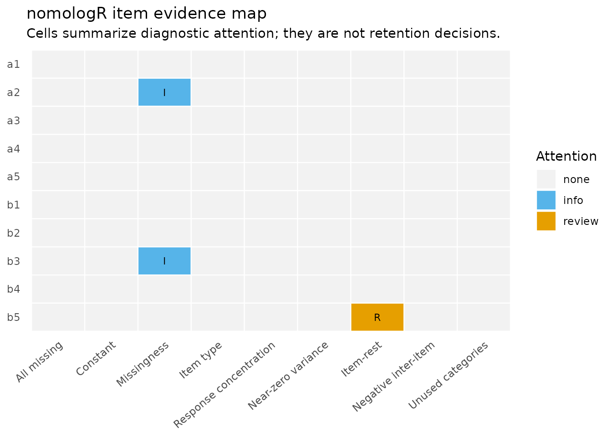
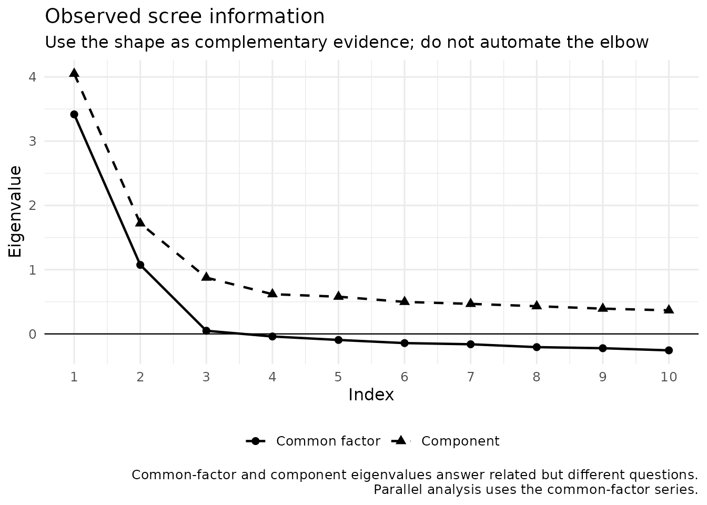

From item audit to exploratory structure
Source:vignettes/exploratory-workflow.Rmd
exploratory-workflow.RmdWhy this workflow is staged
Exploratory factor analysis is not a scale-purification button. Before interpreting an exploratory factor solution, researchers should know what items are being analyzed, how they are coded, whether the correlation model matches the intended measurement level, and how many dimensions are substantively plausible.
nomologR therefore separates three questions:
-
nomo_screen()— What does the item and response data look like? -
nomo_factors()— How many latent dimensions deserve investigation? -
nomo_efa()— What does a requested exploratory structure look like?
The handoff is deliberate: no stage silently deletes items, changes the requested factor count, or treats a numerical reference value as proof.
A teaching dataset with a known answer
nomo_demo_continuous was simulated from a documented
population model, so the package’s evidence can be checked against the
truth:
- two factors, A and B, correlated .40;
- items
a1–a4andb1–b4are ordinary indicators (population loadings .70 to .80); -
a5cross-loads on both factors (.45 on A and .35 on B); -
b5is a weak indicator (.30 on B); -
a2andb3contain a small amount of missing data.
str(nomo_demo_continuous)
#> 'data.frame': 500 obs. of 10 variables:
#> $ a1: num 2.23 3.47 4.8 2.87 5.22 4.02 3.23 3.12 3.62 4.66 ...
#> $ a2: num 1.46 3.06 4.16 2.46 3.71 6.06 4.16 3.45 NA 5.27 ...
#> $ a3: num 2.25 4.71 4.08 3.45 5.94 4.3 3.39 3.41 3.21 5.31 ...
#> $ a4: num 2.59 3.39 4.59 3.85 4.01 3.65 4.09 3.81 4.77 5.16 ...
#> $ a5: num 1.85 3.23 4.54 4.22 3.62 4.67 4.14 3.46 4.95 3.08 ...
#> $ b1: num 2.67 4.05 5.31 4.6 3.57 3.11 4.16 3.99 3.49 2.71 ...
#> $ b2: num 4.21 3.91 3.65 3.72 3.94 3.01 4.32 2.72 3.17 3.95 ...
#> $ b3: num 2.33 4.72 4.85 4.63 2.84 2.95 3.75 4.02 3.69 3.08 ...
#> $ b4: num 4.79 3.72 4.24 4.27 4.6 2.28 5.01 4.62 2.94 2.87 ...
#> $ b5: num 3.42 4.47 5.4 4.38 3.87 2.97 4.75 5.63 3.65 2.97 ...
colSums(is.na(nomo_demo_continuous))
#> a1 a2 a3 a4 a5 b1 b2 b3 b4 b5
#> 0 15 0 0 0 0 0 12 0 0With real data, of course, nobody hands you the population model. The point of a known-answer dataset is to learn what the evidence looks like when you do know what is true.
Step 1: audit the items
scr <- nomo_screen(nomo_demo_continuous)
summary(scr)
#> <summary_nomo_screen>
#> Cases: 500 | Items: 10 | No review flag: 9 | Review: 1 | Concern: 0
#> Missingness flags: 2 | Constant: 0 | All missing: 0 | Relationship eligible: 10
#>
#> Integrated item review:
#> # A tibble: 10 × 7
#> item item_type attention pct_missing mode_prop
#> <chr> <chr> <ord> <dbl> <dbl>
#> 1 a1 numeric_continuous none 0 0.01
#> 2 a2 numeric_continuous none 0.03 0.0124
#> 3 a3 numeric_continuous none 0 0.01
#> 4 a4 numeric_continuous none 0 0.012
#> 5 a5 numeric_continuous none 0 0.016
#> 6 b1 numeric_continuous none 0 0.016
#> 7 b2 numeric_continuous none 0 0.014
#> 8 b3 numeric_continuous none 0.024 0.0102
#> 9 b4 numeric_continuous none 0 0.012
#> 10 b5 numeric_continuous review 0 0.014
#> corrected_item_rest_r review_metrics
#> <dbl> <chr>
#> 1 0.559 ""
#> 2 0.580 ""
#> 3 0.511 ""
#> 4 0.549 ""
#> 5 0.588 ""
#> 6 0.602 ""
#> 7 0.513 ""
#> 8 0.571 ""
#> 9 0.481 ""
#> 10 0.279 "corrected_item_rest"
#>
#> `attention` is a review aid, not an automatic retention/deletion decision.The screening object is descriptive and diagnostic. The missing
values in a2 and b3 are visible here, before
any model decides how to handle them. A flag is a reason to inspect an
item or a coding decision, not an instruction to remove it.
plot(scr)
Careless responding
The audit above is about items. A second question is about respondents: did everyone read the items? The data below is simulated: four five-point scales of six items, two reverse keyed in each, with 15 respondents who gave the same answer throughout and 15 who answered at random.
set.seed(34)
n <- 400
factors <- replicate(4, rnorm(n))
respond <- function(f) pmin(5, pmax(1, round(3 + f + rnorm(n, sd = .7))))
responses <- list()
reverse <- character()
scales <- list()
for (s in 1:4) {
items <- paste0("s", s, "_", 1:6)
for (j in 1:6) {
r <- respond(factors[, s])
if (j %in% c(2, 5)) {
r <- 6 - r
reverse <- c(reverse, items[j])
}
responses[[items[j]]] <- r
}
scales[[paste0("S", s)]] <- items
}
survey <- as.data.frame(responses)
survey[1:15, ] <- 3
survey[16:30, ] <- matrix(sample(1:5, 15 * ncol(survey), TRUE), 15, ncol(survey))effort = TRUE adds case-level indices from the
careless-responding literature. Reverse keying and the response range
are declared rather than inferred, because a range guessed from the data
is wrong whenever a category went unused:
careful <- nomo_screen(
survey,
effort = TRUE,
scales = scales,
reverse = reverse,
scale_range = c(1, 5)
)
careful
#> <nomo_screen>
#> Cases: 400 | Candidate items: 24
#> Items with missing responses: 0 | Constant: 0 | All missing: 0
#> Relationship diagnostics: 24 eligible items | 24 item-rest estimates
#> Response concentration flags: 0 | Near-zero variance: 0
#> Careless-responding flags: 75 cases (long-string 15 | antonym 27 | synonym 36)
#> Cases are flagged, never removed. Indices disagree by design; see the decision log.
#> Decision log: 26 info | 29 review | 0 concern
#> No rows or items were removed or modified.The indices do not agree, and they are not supposed to. Compare what two of them say about the respondents who answered identically throughout:
nomo_table(careful, "effort")[1:3, c(
"row", "long_string", "inter_item_sd", "flagged_by"
)]
#> # A tibble: 3 × 4
#> row long_string inter_item_sd flagged_by
#> <int> <dbl> <dbl> <chr>
#> 1 1 24 0 long_string
#> 2 2 24 0 long_string
#> 3 3 24 0 long_stringLong-string flags every one of them. Inter-item standard deviation gives them a score of zero, the most consistent possible. That is not a contradiction. Inter-item standard deviation detects random responding (Marjanovic et al., 2015), and a respondent who never varies is not random. Sorting on it alone would keep exactly the respondents long-string exists to find, which is why Curran (2016) recommends using these methods in series.
Two further cautions come from the sources. Huang et al. (2012) found the indices they recommended identified attentive respondents well and random responders poorly, so a case with no flag has not been shown to be attentive. And each antonym, synonym, and even-odd value is a correlation computed across a handful of pairs or scales; with few of them, attentive respondents cross zero by chance, and the decision log says so.
Nothing is removed. Deciding what to do with a flagged respondent is a research decision, made with the design and the data collection in view.
Step 2: investigate factor retention
fac <- nomo_factors(
nomo_demo_continuous,
criterion_set = "core",
seed = 2026
)
summary(fac)
#> <summary_nomo_factors>
#> Cases: 500 | Items: 10 | Correlation: pearson | Criteria: core
#>
#> Parallel-analysis rule sensitivity:
#> # A tibble: 3 × 3
#> rule n_factors selected
#> <chr> <int> <lgl>
#> 1 percentile 2 TRUE
#> 2 mean 2 FALSE
#> 3 crawford 2 FALSE
#>
#> Retention evidence:
#> # A tibble: 3 × 3
#> method n_factors role
#> <chr> <int> <chr>
#> 1 Parallel analysis 2 primary
#> 2 MAP (original TR2) 2 complementary
#> 3 MAP (revised TR4) 2 complementary
#>
#> Criteria requested but not run:
#> # A tibble: 1 × 2
#> method
#> <chr>
#> 1 Empirical Kaiser criterion
#> reason
#> <chr>
#> 1 EKC needs one common sample size for the analyzed matrix; pairwise missing-da…
#>
#> Criterion-family concordance:
#> # A tibble: 1 × 3
#> n_factors n_families families
#> <int> <int> <chr>
#> 1 2 2 Parallel analysis; MAP
#>
#> Supporting adequacy evidence:
#> # A tibble: 2 × 2
#> metric
#> <chr>
#> 1 KMO
#> 2 Bartlett
#> display
#> <chr>
#> 1 0.874
#> 2 Bartlett's test was not computed because pairwise missing-data handling does …
#>
#> Synthesis:
#> All 2 available criterion families (3 methods) point to 2 factors. Related methods within a family are grouped before concordance is summarized; this is strong converging evidence for investigating that solution, not proof of dimensionality. 1 requested method was not evaluated; see criterion status for the documented reason.
#>
#> Factor counts are candidates for investigation, not automatic dimensionality verdicts.
#> Common-factor eigenvalues come from a reduced common-variance matrix; later values can be negative.Parallel analysis is the primary retention evidence, with MAP and the
empirical Kaiser criterion (EKC) providing complementary evidence. Here
parallel analysis and both MAP variants agree on two dimensions, which
matches the population model. When methods disagree, the disagreement is
part of the result rather than something nomologR resolves
with a majority vote.
Notice that EKC was requested but not run. The default
pairwise-complete correlations use different numbers of cases for
different item pairs (because of the missing values in a2
and b3), and EKC needs one common sample size.
nomologR reports that reason instead of silently
substituting another criterion. Choosing
missing = "complete" would make EKC available, at the cost
of analyzing only the cases with no missing items — a trade-off for the
researcher to make and record.
plot(fac, type = "scree")
Historical note: eigenvalues greater than one
For decades, many researchers retained every component with an
eigenvalue greater than one (Guttman, 1954; Kaiser, 1960), often as part
of the “Little Jiffy” routine of principal components, eigenvalues
greater than one, and varimax rotation. Simulation research has shown
that this rule frequently retains too many dimensions, and parallel
analysis (Horn, 1965) is now preferred. nomologR can
display the legacy rule with criterion_set = "all", labeled
as historical context and excluded from the synthesis, so that learners
can recognize it in published work without relying on it.
Step 3: hand the retention evidence into EFA
efa <- nomo_efa(
nomo_demo_continuous,
factors = fac
)
summary(efa)
#> nomologR exploratory factor analysis
#> 500 cases | 10 items | 2 factors (from nomo_factors())
#> Correlation: pearson | Extraction: minres | Rotation: oblimin
#> Supporting adequacy: KMO = 0.874
#>
#> Item-level structural review
#> # A tibble: 10 × 7
#> item primary_factor primary_loading secondary_factor secondary_loading
#> <chr> <chr> <dbl> <chr> <dbl>
#> 1 a1 F1 0.808 F2 -0.0444
#> 2 a2 F1 0.709 F2 0.0643
#> 3 a3 F1 0.667 F2 0.0153
#> 4 a4 F1 0.770 F2 -0.0377
#> 5 a5 F1 0.414 F2 0.335
#> 6 b1 F2 0.783 F1 0.0141
#> 7 b2 F2 0.693 F1 -0.0200
#> 8 b3 F2 0.783 F1 -0.00673
#> 9 b4 F2 0.637 F1 -0.0119
#> 10 b5 F2 0.332 F1 0.0286
#> # ℹ 2 more variables: communality <dbl>, attention <chr>
#>
#> Items requiring review
#> # A tibble: 3 × 3
#> item attention
#> <chr> <chr>
#> 1 a5 REVIEW
#> 2 b4 REVIEW
#> 3 b5 STRONG REVIEW
#> explanation
#> <chr>
#> 1 secondary loading |0.34| meets/exceeds the 0.30 cross-loading reference
#> 2 communality 0.40 is below the 0.40 teaching reference
#> 3 primary loading |0.33| is below the 0.40 teaching reference; communality 0.12…
#>
#> Factor correlations
#> F1 F2
#> F1 1.000 0.439
#> F2 0.439 1.000
#>
#> Off-diagonal RMSR: 0.018
#>
#> Largest localized residuals
#> # A tibble: 5 × 4
#> item1 item2 residual abs_residual
#> <chr> <chr> <dbl> <dbl>
#> 1 b4 b5 0.0425 0.0425
#> 2 a5 b5 -0.0388 0.0388
#> 3 a4 b5 0.0380 0.0380
#> 4 a2 a5 0.0295 0.0295
#> 5 b2 b5 -0.0277 0.0277
#>
#> Interpretation rule: numerical references trigger inspection, not automatic deletion or hidden refitting.Passing the nomo_factors object carries forward the item
set, modeling types, correlation model, and missing-data strategy. The
primary parallel-analysis count becomes the requested
EFA factor count. If the retention evidence had identified neighboring
plausible solutions, nomo_efa() would record that context
and recommend comparing them rather than treating the handoff as
proof.
Read the item table as evidence, not a deletion list
item_view <- efa$item_summary[, c(
"item", "primary_factor", "primary_loading", "secondary_loading",
"communality", "attention"
)]
item_view
#> # A tibble: 10 × 6
#> item primary_factor primary_loading secondary_loading communality attention
#> <chr> <chr> <dbl> <dbl> <dbl> <chr>
#> 1 a1 F1 0.808 -0.0444 0.624 KEEP
#> 2 a2 F1 0.709 0.0643 0.547 KEEP
#> 3 a3 F1 0.667 0.0153 0.454 KEEP
#> 4 a4 F1 0.770 -0.0377 0.569 KEEP
#> 5 a5 F1 0.414 0.335 0.406 REVIEW
#> 6 b1 F2 0.783 0.0141 0.623 KEEP
#> 7 b2 F2 0.693 -0.0200 0.469 KEEP
#> 8 b3 F2 0.783 -0.00673 0.608 KEEP
#> 9 b4 F2 0.637 -0.0119 0.400 REVIEW
#> 10 b5 F2 0.332 0.0286 0.120 STRONG RE…Compare the table with the known population model:
-
a5receives REVIEW. Its secondary loading of 0.34 reaches the cross-loading reference, exactly the feature built into the data. -
b5receives STRONG REVIEW. Its primary loading of 0.33 and communality of 0.12 reflect the weak population loading. -
b4receives REVIEW even though its population loading is .70. Its sample communality of 0.400 sits essentially at the .40 reference. This is sampling variability around a teaching reference — a reminder that references are prompts, not cliffs.
KEEP means that no configured numerical teaching
reference fired. It does not mean that theory, wording,
content coverage, redundancy, or external validity evidence has approved
the item. Likewise, REVIEW does not mean “delete.”
Defensible options for a5 include retaining it because its
content is essential, revising its wording, or evaluating a model
without it — and recording the rationale either way.
Pattern versus structure matrices
With oblique rotation, the pattern matrix contains regression-like factor coefficients and is the primary matrix for interpreting which indicators define which factors. The structure matrix contains item–factor correlations and also reflects the correlation between factors.
round(efa$pattern_matrix, 2)
#> F1 F2
#> a1 0.81 -0.04
#> a2 0.71 0.06
#> a3 0.67 0.02
#> a4 0.77 -0.04
#> a5 0.41 0.34
#> b1 0.01 0.78
#> b2 -0.02 0.69
#> b3 -0.01 0.78
#> b4 -0.01 0.64
#> b5 0.03 0.33
round(efa$structure_matrix, 2)
#> F1 F2
#> a1 0.79 0.31
#> a2 0.74 0.38
#> a3 0.67 0.31
#> a4 0.75 0.30
#> a5 0.56 0.52
#> b1 0.36 0.79
#> b2 0.28 0.68
#> b3 0.34 0.78
#> b4 0.27 0.63
#> b5 0.17 0.34
round(efa$factor_correlations, 2)
#> F1 F2
#> F1 1.00 0.44
#> F2 0.44 1.00
plot(efa, type = "pattern")
Residual strain
A plausible loading pattern can still leave localized relationships
unexplained. nomo_efa() therefore returns the reproduced
correlation matrix, the residual matrix, the off-diagonal RMSR, and
ranked residual pairs.
efa$rmsr
#> [1] 0.01768766
head(efa$residual_pairs, 10)
#> # A tibble: 10 × 4
#> item1 item2 residual abs_residual
#> <chr> <chr> <dbl> <dbl>
#> 1 b4 b5 0.0425 0.0425
#> 2 a5 b5 -0.0388 0.0388
#> 3 a4 b5 0.0380 0.0380
#> 4 a2 a5 0.0295 0.0295
#> 5 b2 b5 -0.0277 0.0277
#> 6 a3 b5 -0.0272 0.0272
#> 7 a3 a4 0.0268 0.0268
#> 8 a4 b1 0.0264 0.0264
#> 9 a3 b4 0.0241 0.0241
#> 10 a4 b3 -0.0206 0.0206
plot(efa, type = "residuals")
Residuals are diagnostic evidence. nomologR does not
search for a better model, add correlated residuals, change the factor
count, or remove indicators behind the user’s back.
Researcher control remains explicit
The default is common-factor MINRES extraction with oblimin rotation. Researchers may choose another common-factor extraction or rotation, but those choices remain visible in the result and decision log.
efa_varimax <- nomo_efa(
nomo_demo_continuous,
factors = 2,
rotation = "varimax"
)
efa_varimax$item_summary[, c("item", "primary_loading", "secondary_loading", "attention")]
#> # A tibble: 10 × 4
#> item primary_loading secondary_loading attention
#> <chr> <dbl> <dbl> <chr>
#> 1 a1 0.777 0.139 KEEP
#> 2 a2 0.705 0.223 KEEP
#> 3 a3 0.653 0.166 KEEP
#> 4 a4 0.742 0.137 KEEP
#> 5 a5 0.479 0.420 REVIEW
#> 6 b1 0.766 0.190 KEEP
#> 7 b2 0.671 0.136 KEEP
#> 8 b3 0.761 0.169 KEEP
#> 9 b4 0.618 0.132 REVIEW
#> 10 b5 0.330 0.103 STRONG REVIEWAn orthogonal rotation is permitted rather than prohibited, but it forces the factors to be uncorrelated even though A and B correlate .40 in the population. The decision log asks the researcher to justify that assumption.
Ordered response categories
Many rating scales produce ordered categories rather than continuous
scores. nomo_demo_ordinal stores the same latent responses
as five-category ordered factors, so nomologR uses
polychoric correlations automatically:
fac_ord <- nomo_factors(nomo_demo_ordinal, seed = 2026)
fac_ord$correlation
#> [1] "polychoric"
efa_ord <- nomo_efa(nomo_demo_ordinal, factors = fac_ord)
efa_ord$item_summary[, c("item", "primary_loading", "secondary_loading", "attention")]
#> # A tibble: 10 × 4
#> item primary_loading secondary_loading attention
#> <chr> <dbl> <dbl> <chr>
#> 1 a1 0.792 -0.0257 KEEP
#> 2 a2 0.695 0.0437 KEEP
#> 3 a3 0.650 0.0258 KEEP
#> 4 a4 0.768 -0.0535 KEEP
#> 5 a5 0.433 0.307 REVIEW
#> 6 b1 0.765 0.00370 KEEP
#> 7 b2 0.650 -0.00701 KEEP
#> 8 b3 0.740 0.0167 KEEP
#> 9 b4 0.658 -0.0279 KEEP
#> 10 b5 0.359 -0.0283 STRONG REVIEWWhen Likert-type responses are stored as integers instead of ordered
factors, integer storage alone does not tell nomologR
whether the researcher intends a continuous or ordinal model. Declare
the modeling level explicitly. This chunk only illustrates the syntax,
because the teaching data already store ordered factors:
What should happen next?
EFA contributes exploratory evidence about latent structure. A defensible measurement workflow still requires theoretical interpretation and, where feasible, confirmation on fresh or holdout data. Continue with From CFA to a defensible measurement model.
Research basis
The package’s EFA philosophy follows reviews that documented problematic historical defaults — principal components presented as factor analysis, eigenvalues greater than one, orthogonal rotation, and mechanical deletion — and recommended common-factor models, evidence-based retention, and oblique rotation when factors may correlate (Fabrigar et al., 1999; Conway & Huffcutt, 2003; Browne, 2001; Watkins, 2018). Parallel analysis originates with Horn (1965); the eigenvalue-greater-than-one rule with Guttman (1954) and Kaiser (1960). See the research basis article for full references and the broader historical-to-contemporary map.